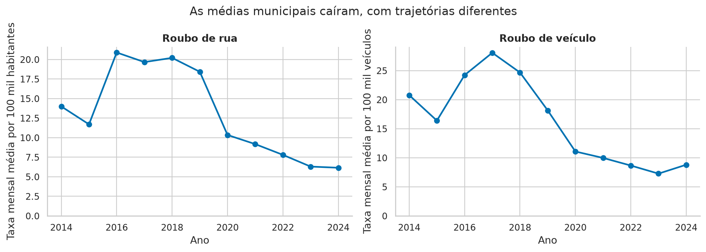
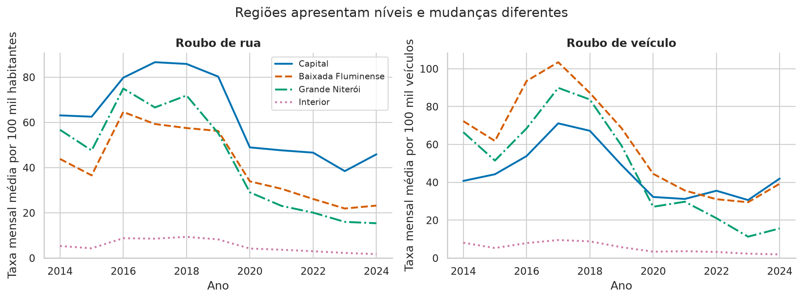
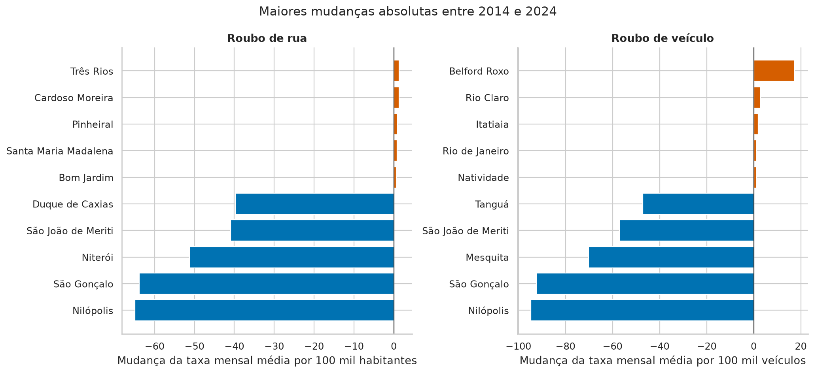
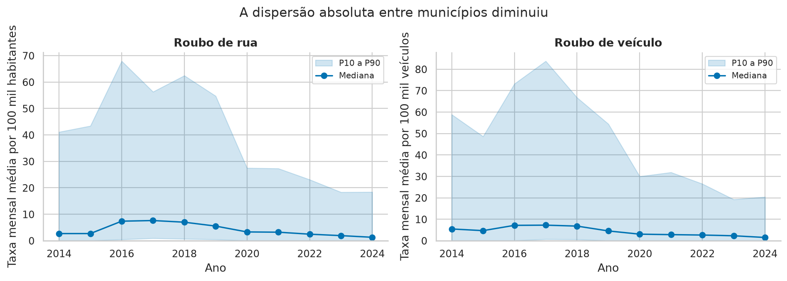
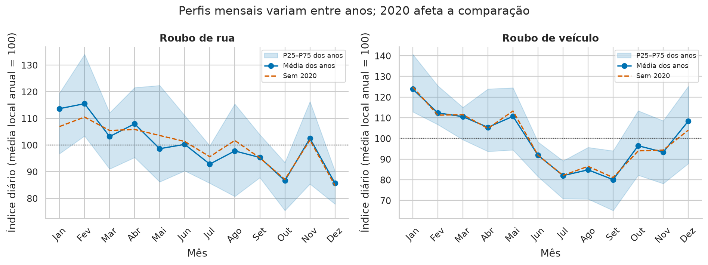
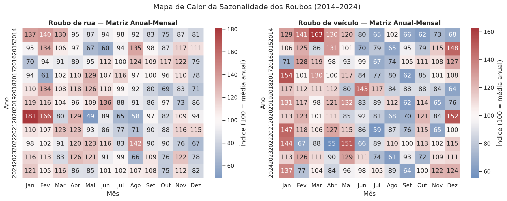

Roubos no Rio de Janeiro:
uma mudança igual para todos?
Análise Exploratória e Visualização de 11 Anos de Ocorrências Policiais (2014–2024)
Autores: Mateus Cavalcanti, Pedro Braga e Felipe · Docente: Prof. João Rulff
Queda generalizada das taxas médias municipais em 2024 vs. 2014.
Heterogeneidade territorial profunda entre regiões e municípios do estado.
Existência de padrões estacionais mensais estatisticamente recorrentes.
Dados, Rigor e Decisões Metodológicas
Fonte e Abstração
- Base: Instituto de Segurança Pública (ISP-RJ).
- Cobertura: 132 meses contínuos (janeiro/2014 a dezembro/2024).
- Integridade: Validação criptográfica com hashes SHA-256 no notebook.
Três Decisões Metodológicas
- Denominadores distintos: Roubo de rua por 100 mil hab.; roubo de veículo por 100 mil veículos (frota). Comparamos trajetórias, nunca níveis absolutos.
- Painel Conservador de 82 Municípios: 10 municípios tinham 40 meses consecutivos zerados no início da série (subnotificação). Excluímos da série 2014-2024 para evitar viés de aumento espúrio.
- Média Não-Ponderada: Cada município tem peso unitário. Descreve o município típico, evitando que a Capital absorva a análise.
Pergunta 1: Trajetória Temporal Agregada (H1)

Resultados Principais (2014–2024)
- Roubo de Rua: Média cai de 13,99 para 6,15 por 100 mil hab. (−56,0%).
- Roubo de Veículo: Média cai de 20,78 para 8,80 por 100 mil veículos (−57,6%).
O Caminho Oscilou: Ciclo de Alta e Queda
- 2014–2017 (Crise Fiscal e Pós-Olímpica): Forte escalada. Pico de rua em 2016 (20,89) e pico de veículos em 2017 (28,07).
- 2018–2024: Queda acentuada a partir da intervenção federal e choque da pandemia de 2020.
- Veredito H1: Confirmada descritivamente no nível médio do painel.
Pergunta 2: Fratura e Disparidades Regionais (H2)

Divergências Gritantes entre Regiões
- Interior (65 municípios): Patamares historicamente muito mais baixos (2024: rua 2,45; veículos 2,14).
- Grande Niterói (3 mun.): Queda acentuada de 65,65 para 15,82 em veículos (−75,9%).
- Baixada Fluminense (13 mun.): Taxas altíssimas (pico de 102,7 em 2017), caindo para 39,23 em 2024 (−45,5%).
- A Anomalia da Capital: Em roubo de veículos, a Capital passou de 40,71 (2014) para 41,96 (2024) — aumento de +3,1%!
Pergunta 3: Municípios em Destaque — Extremos e Assimetrias

Balanço Geral no Painel (82 Municípios)
- Roubo de Rua: 65 quedas / 12 aumentos / 5 estáveis.
- Roubo de Veículos: 65 quedas / 7 aumentos / 10 estáveis.
Casos Críticos
- Belford Roxo: Aumento chocante de +17,43 na taxa mensal de veículos (ultrapassando 120 por 100 mil veículos).
- Grandes Reduções: Nilópolis (−94,8 em veículos, −64,9 em rua) e São Gonçalo (−92,4 em veículos, −63,8 em rua).
- Veredito H2: Plenamente Confirmada — extrema polarização espacial.
Pergunta 4: Dispersão e Desigualdade Intermunicipal

Estreitamento Absoluto da Distribuição
- Intervalo Interdecil (P90 − P10):
- Roubo de Rua: caiu de 38,38 para 18,06 (−53,0%).
- Roubo de Veículos: caiu de 55,48 para 18,23 (−67,1%).
Interpretação Cuidadosa
- A dispersão absoluta diminuiu porque a grande maioria dos municípios convergiu para patamares baixos.
- Porém, isso não significa igualdade territorial: a cauda superior continua afastada da mediana, e a dispersão relativa e o risco de vitimização permanecem extremamente concentrados na Região Metropolitana.
Pergunta 5: A Grande Mutação — A Ascensão do Celular

Substituição Criminológica nas Ruas
- Participação do Celular: Saltou de 8,1% (2014) para 36,6% (2024) dos roubos de rua (+28,5 p.p.).
- Contagens Absolutas no Painel:
- Roubo a Transeunte: despencou de 80.461 para 30.868 (−61,6%).
- Roubo em Coletivo: caiu de 7.314 para 6.235.
- Roubo de Celular: saltou de 7.758 para 21.416 (+176,0%)!
Pergunta 6: Sazonalidade dos Roubos e o Choque de 2020

Metodologia de Padronização
- Taxas diárias (ajustadas por dias do mês) indexadas em 100 pela média anual de cada município.
Padrões Recorrentes
- Roubo de Rua: Pico sistemático em fevereiro (índice 118,2) — verão, Carnaval, grandes aglomerações. Menor em setembro/outubro.
- Roubo de Veículos: Pico em janeiro (índice 121,5) e março — turismo, férias e trânsito intenso. Menor entre junho e setembro.
- Efeito Pandemia (2020): Despencou em abril/maio devido ao lockdown. A exclusão de 2020 confirma a robustez do padrão.
Validação Estatística da Sazonalidade (Marco 3)

Fechando a Hipótese 3 com Rigor Formal
No Marco 2, a hipótese de sazonalidade permaneceu em aberto. No Marco 3, aplicamos o teste não-paramétrico de Kruskal-Wallis ao longo dos 11 anos:
| Categoria | Amostra | Estatística H | p-valor | Significância |
|---|---|---|---|---|
| Roubo de Rua | Todos os anos | 24,34 | 0,011 | p < 0,05 |
| Roubo de Rua | Sem 2020 | 20,88 | 0,035 | p < 0,05 |
| Roubo de Veículo | Todos os anos | 39,83 | 0,00004 | p < 0,001 |
| Roubo de Veículo | Sem 2020 | 35,21 | 0,00023 | p < 0,001 |
Sensibilidade e Robustez do Recorte
Comparação dos 82 vs. Todos os 92 Municípios (2018–2024)
Para atestar que a exclusão dos 10 municípios não distorceu os resultados, reexecutamos os cálculos no período em que todos os municípios tinham dados válidos:
| Painel | Categoria | Média 2018 | Média 2024 | Variação (%) |
|---|---|---|---|---|
| 82 municípios | Roubo de rua | 20,20 | 6,15 | −69,5% |
| 92 municípios | Roubo de rua | 18,05 | 5,49 | −70,5% |
| 82 municípios | Roubo de veículos | 24,67 | 8,80 | −64,3% |
| 92 municípios | Roubo de veículos | 22,12 | 7,77 | −64,9% |
A magnitude e o sentido das variações são idênticos nos dois painéis. A precaução metodológica adotada na auditoria protegeu a análise sem induzir qualquer viés de seleção.
Síntese dos Achados, Limitações e Fechamento
As Três Respostas da Pesquisa
- H1 (Queda Agregada): Confirmada (−56% rua, −58% veículos), mas com crise severa e picos em 2016-2017.
- H2 (Heterogeneidade): Confirmada categoricamente. A Capital aumentou roubos veiculares (+3,1%) e Belford Roxo explodiu (+17,4).
- H3 (Sazonalidade): Confirmada com validação formal de Kruskal-Wallis ($p < 0,05$), com picos de verão.
Mutação Estrutural
O roubo de celular saltou de 8,1% para 36,6% do total de rua (quase triplicando em contagens absolutas).
Limitações Epistemológicas
- Subnotificação Policial: Lidamos com registros de queixa, não com o censo total de crimes.
- Incentivo de Registro: Seguros de celular e veículos impulsionam registros de B.O.
- Não-Causalidade: O estudo é rigorosamente descritivo e exploratório; não inferimos causalidade de políticas.
Repositório do Projeto:
github.com/mateusdcc/roubos-rj-aed
Notebook, Dados, Scripts e Figuras 100% Reprodutíveis